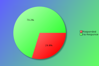
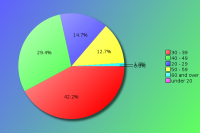
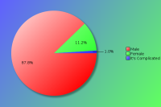
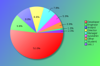
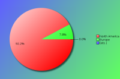

YAPC::NA 2015 - Survey Results
The following survey results are a simple presentation of the raw data.
No attempt has been made to analyse the data and compare with previous
years. See forthcoming PDFs for more in depth analysis.
Click on pie charts to view larger image version.
Demographics
These questions will help us understand who our attendees are.
Attendees:

| Count | Description |
|---|
| 102 | Responded |
| 240 | No Response |
| 342 | Total |
| 29 | Response Percentage |
Age Band:

| Count | Description |
|---|
| 0 | under 20 |
| 15 | 20 - 29 |
| 43 | 30 - 39 |
| 30 | 40 - 49 |
| 13 | 50 - 59 |
| 1 | 60 and over |
Gender:
Although this question is optional, with your help we would like to monitor changes in attendance over time.

| Count | Description |
|---|
| 86 | Male |
| 11 | Female |
| 1 | It's Complicated |
Job Type:

| Count | Description |
|---|
| 9 | CEO/Company Director/Senior Manager |
| 1 | Non-Technical Manager |
| 8 | Technical Manager |
| 9 | Technical Architect/Analyst |
| 53 | Developer |
| 10 | Engineer |
| 6 | SysAdmin |
| 1 | Student |
| 0 | Lecturer/Teacher/Trainer |
| 1 | Human Resources |
| 0 | Researcher |
| 0 | Unemployed |
| 4 | Other |
If your position covers many roles, please base this on your most senior responsibility. Also base this on the role you perform, rather than your job title. For example, a 'QA Developer' would be a 'Developer' role, and 'Information Manager' would a Manager role (Technical or Non-Technical depending upon your responsibilites)
If 'Other' please enter your professional job role or title:
- CEO
- Consultant
- Homemaker
- Owner
- Technology Consultant
Industry:

| Count | Description |
|---|
| 0 | Automotive |
| 5 | Education |
| 3 | Engineering |
| 5 | Finance |
| 5 | Government |
| 9 | IT Services |
| 40 | Internet/Web |
| 0 | Legal |
| 0 | Logistics |
| 3 | Media/Entertainment |
| 5 | Medical/Healthcare |
| 2 | Property |
| 3 | Research |
| 1 | Retail |
| 8 | Telecommunications |
| 6 | Travel |
| 1 | Unemployed |
| 6 | Other |
If you or your company undertake work within mulitple industry sectors, please select the primary one you are currently working within.
If 'Other' please enter your industry sector:
- Aviation
- Biotech
- Hardware development
- Human Resources
- Security
- Semiconductor
Region:

| Count | Description |
|---|
| 94 | North America |
| 0 | Canada |
| 0 | South America |
| 8 | Europe |
| 0 | Asia |
| 0 | Australaisa |
| 0 | Africa |
Please note this is the region you were a resident in, prior to attending the conference.
The Perl Community, YAPCs & Workshops
These questions are designed to help us understand our attendees level of involvement in the Perl community.
How do you rate your Perl knowledge?
| Count | Description |
|---|
| 9 | Beginner |
| 35 | Intermediate |
| 57 | Advanced |
How many previous YAPCs have you attended?
| Count | Description |
|---|
| 36 | This was my first YAPC |
| Attended YAPCs | 1 | 2 | 3 | 4 | 5 | 6 | 7 | 9 | 11 | 12 | 14 | 15 | 16 | 17 | total |
|---|
| YAPC::NA | 19 | 11 | 14 | 5 | 2 | 2 | 2 | 3 | 3 | 2 | 1 | 1 | 1 | 1 | 282 |
| YAPC::Europe | 4 | 2 | 1 | 4 | - | - | - | 2 | 1 | - | - | - | - | - | 59 |
| YAPC::Asia | 1 | 2 | - | - | - | - | - | - | - | - | - | - | - | - | 5 |
| YAPC::Australia / OSDC::Australia | 1 | - | - | - | - | - | - | - | - | - | - | - | - | - | 1 |
| YAPC::Russia | 1 | - | - | - | - | - | - | - | - | - | - | - | - | - | 1 |
| YAPC::SA / YAPC::Brazil | 2 | - | - | - | - | - | - | - | - | - | - | - | - | - | 2 |
How many Perl Workshops have you attended?
| Count | Description |
|---|
| 61 | Never attended one |
| Attended Workshops | 1 | 2 | 3 | 4 | 5 | 6 | 7 | 8 | ... | 25 | total |
|---|
| Pittsburgh Perl Workshop | 11 | 6 | 3 | - | 1 | 1 | 1 | - | ... | - | 50 |
| Frozen Perl Workshop | 2 | - | 2 | - | - | - | - | - | ... | - | 8 |
| Perl Oasis Workshop | 3 | 1 | 4 | 1 | - | - | - | - | ... | - | 21 |
| DC / Baltimore Perl Workshop | 4 | 5 | - | 2 | - | - | - | - | ... | - | 22 |
| any European Perl Workshops | 1 | 1 | - | 1 | 1 | - | - | 1 | ... | 2 | 70 |
| Other Perl Workshops | 3 | 4 | 1 | - | - | - | - | - | ... | - | 14 |
Do you plan to attend a future YAPC/Workshop?
| Count | Description |
|---|
| 78 | Yes |
| 20 | Maybe |
| 3 | Don't Know |
| 1 | No |
If no, could you tell us why?
Particularly if this is your first YAPC, we would like to understand why you would not be able or interested in attending another event like it.
- Always enjoy YAPC. Even if going every year some of the talks start to seem a bit redundant, there are always a few excellent ones. And the community is great!
- Attended this one because it was local. Employer unlikely to send me to an other.
- Content is starting to get a little old. For me conferences are about sparking new ideas. I'm considering using my budget to attend other conferences with an eye to learning new ideas with the intention of bringing them back to Perl.
- I would love to attend more YAPC and start attending workshops to better my skills and knowledge in Perl development, and to feel part of the Perl community. The 'Maybe' depends on if my employer assists with travel and conference fees, or not.
- The conference itself is great, don't get me wrong. Its more about justifying the travel cost and time out of the office for something that doesn't directly generate revenue or find us customers.
Are you a member of a local Perl Mongers user group?
| Count | Description |
|---|
| 62 | Yes |
| 39 | No |
If not, do you plan to find one or start one?
| Count | Description |
|---|
| 9 | Yes |
| 20 | Maybe |
| 2 | Don't Know |
| 17 | No |
What other areas of the Perl Community do you contribute to?
| Count | Description |
|---|
| 54 | I'm a CPAN Author |
| 3 | I'm a CPAN Tester |
| 2 | I'm a board or committee member of a recognised Perl body (e.g. TPF, EPO, YEF, JPF, etc) |
| 23 | I'm a Perl project developer (e.g. Rakudo, Catalyst, Dancer, Padre, etc) |
| 28 | I have a technical blog (e.g. on blogs.perl.org or a personal blog) |
| 32 | I use or contribute to PerlMonks or other Perl forums |
| 51 | I use IRC (e.g. #perl, #yapc, or #london.pm) |
| 21 | I contribute to Perl mailing lists (e.g. P5P, Perl QA, etc) |
| 7 | other ... |
If 'Other' please enter your area of contribution
- Debian Perl Group
- I (co-)organise & sponsor Perl-events
- I advocate for Perl when people doubt its modern usefulness
- I co-organized YAPC::NA::2015
- I'm Tom Christiansen. :)
- Perl5 Release Manager
- use Perl for work, hope to contribute more OSS in the future
YAPC::NA 2015
Regarding YAPC::NA 2015 in Salt Lake City, UT specifically, please answer the following as best you can.
When did you decide to come to this conference?
| Count | Description |
|---|
| 45 | I'm now a regular YAPC::NA attendee |
| 7 | After YAPC::NA 2014 in Orlando, FL |
| 1 | After reading a YAPC::NA blog post |
| 0 | After joining the Facebook event group |
| 9 | I was nominated to attend by manager/colleague |
| 15 | I was recommended to attend by friend/colleague |
| 3 | After seeing a link or advert on a Perl specific website |
| 0 | After seeing a link or advert on a non-Perl website |
| 2 | After reading an email sent to a mailing list I was in |
| 0 | After seeing other promotions online/in the press |
| 19 | other ... |
If 'Other', what else helped you decide?
- After attending YAPC::NA 2013 in Austin, TX
- After Austin 2013; couldn't afford 2014! (Not YAPC's fault)
- after convincing the boss to pay for the trip.
- after reviewing the list of talks
- after seeing training classes offered
- After volunteering to host, and because OSCON sucks now
- business trip
- don't recall
- employer was willing to pay for tickets and travel
- Guillaume Aubert encouraged me to :)
- Have wanted to attend for many years but never got chance
- I saw that it was located closer to me than usual
- My employer, Grant Street Group, was a sponsor. We're looking for talent but also wish to contribute to the Perl Community.
- saltlake.pm
- The event, and other events in my life, needed to come into alignment before I purchased my ticket
- Use Perl at work. Googled if there were Perl conferences.
- Wanted to attend for a number of years. This year the time was right.
- When it was annouced that it was coming to Utah, I'm local.
Were you a speaker?
| Count | Description |
|---|
| 54 | No |
| 16 | No, but I have spoken before at similar conferences |
| 28 | Yes, and I have spoken before at similar conferences |
| 4 | Yes, and it was my first time as a speaker |
Note that "similar conferences" includes other YAPCs, as well as Linux, Open Source or large technical events such as workshops.
If you were a speaker, would you have been able to attend if you hadn't been speaking?
| Count | Description |
|---|
| 25 | Yes |
| 12 | No |
If you weren't a speaker, would you consider speaking at a future conference?
| Count | Description |
|---|
| 44 | Yes |
| 10 | No |
| 19 | Ask me later |
What was your motivation for coming?
| Count | Description |
|---|
| 41 | the list of speakers |
| 44 | the quality of the talks scheduled |
| 25 | to be a speaker |
| 67 | to meet with Perl/project co-contributors |
| 84 | to socialise with Perl geeks |
| 24 | to meet Larry Wall |
| 30 | to visit Salt Lake City, UT |
| 19 | other ... |
If 'Other', what else motivated you to attend?
- 1. to hire Perl developers. 2. to meet with Bluehost/HostGator, a large customer of ours
- came along with my husband
- Career Networking
- company paid me to go
- curious about Perl6
- I enjoy YAPC
- I'm a local
- job fare
- organizing team
- perl master classes
- promote Perl 6
- The Master Classes
- To help out
- To keep the unbroken streak of YAPC::NA attendence.
- to learn
- To learn about issues currently facing Perl and its community
- To learn new things about Perl
- To learn perl
- To meet up with old friends, look for talent, get out of Dodge.
What aspects of the conference do you feel gave value for money?
| Count | Description |
|---|
| 92 | the talks / speakers |
| 6 | the conference bag |
| 39 | the tshirt |
| 20 | the job fair |
| 45 | the conference dinner |
| 52 | the conference venue |
| 36 | the city of Salt Lake City |
| 56 | the hallway track |
| 67 | the attendees |
| 2 | other ... |
If 'Other', what else did you think was value for money?
- I somehow managed to miss that the dinner was a thing, until it was too late.
- Master classes
Will you wear the YAPC shirt after YAPC?
| Count | Description |
|---|
| 93 | Yes |
| 8 | No |
What kinds of talks would you prefer at future conferences?
| Count | Description |
|---|
| 6 | More beginner level talks |
| 16 | More intermediate level talks |
| 17 | More advanced level talks |
| 51 | It's about right |
| 10 | No preference |
Are there any topics you would specifically like to see featured?
- 1. Have a track for non-technical with-travelers, for family/friends/colleagues who travel with you to socialize while I attend to technical sessions and socialize with fellow Perl folk.
2. Continue the job symposium next time!
- A full beginner track is a good idea
- Catalyst
- Community.
- I love the forays in the other technologies / soft-skills. I would bring even more of the latter, and bring back the lifehack track we had in Florida.
- I support the trend for more talks about what people are making or doing, versus how they're building it.
- I think there should be a 'life' track. there were several talks this year ( and there always are ) that would have been candidates; for instance 'Scrum for One'; these talks would be less perl and more about doing life as a developer.
- I would like to coordinate with other companies who are attending to provide a workshop for recruiting purposes. We can individually select topics that were of interest from this past symposium: Resume advice, Recruiting Tips, One on one interviews, etc.
- I would like to see more talks focused on how to use a under-rated cpan module to its fullest extent. i.e. practical examples I can pick up and run with.
- I'm not sure if I would mess the the mix of talks too much. In particular I think it is vital we continue to have a good beginners track; not just for total Perl beginners but for people who learned perl largely in isolation and could use introduction to to a widers range of tools.
But I'd love to see a couple more longer, in-depth technical talks. Maybe not-quite-tutorial length, but deeper dives into writing APIs, how to use Dancer or Mojo effectively, tips & tricks for DBIx, etc. I may not need or want to spend a whole day on some of these at an extra tutorial, but would like ample time to see an expert on a subject have the time to really show the code solving an interesting problem, or demonstrating _why_ some things are best practices in a large, complex system.
- It might be useful to see a talk about a real-world process of converting a bit of code from P5 to P6.
- Machine Learning, Natural Language Processing, Search
- Might be interesting to head more business-minded people talk. How perl is used within companies, success stories, interesting projects.
Deep technical topics don't work for me in a spoken format. I'd rather read the FM than listen. Overview of a change to pick an interest is fine.
- more discussion of "best practices" and "updated best practices"
- More Perl 6 in general. I wanted jnthn to come, but he had to go and get married the week before YAPC::NA.
- More Perl 6 talks! Also, the closing keynote was poorly chosen; Ricardo's Perl 5.22 talk would have made a much better keynote talk.
- Natural Language Processing
- Non-Perl topics.
- Perl 6
- Perl web development with modern web technologies; nosql DB, web sockets, Oauth, etc..
- Perl. No seriously, there seemed to be an awfully lot of non-Perl talks. Some are fine, and I get that a diversity of interesting topics is good, but IMO, a conference that has "Perl" right there in it's name should be mostly about... Perl.
- RPerl
- software architecture
- ZeroMQ or RabbitMQ applications. Beginner level.
Did you attend the banquet?
| Count | Description |
|---|
| 61 | Yes |
| 34 | No |
If the banquet was made a separate cost from the conference, would you attend it?
| Count | Description |
|---|
| 49 | Yes |
| 42 | No |
How do you rate the conference?
How would you rate your overall satisfaction of the following areas of the conference?
| Choices | 1 | 2 | 3 | 4 | 5 |
|---|
| Newsletters/Updates | 28 | 46 | 10 | 4 | - |
|---|
| Web site | 27 | 48 | 17 | 4 | - |
|---|
| Registration process | 54 | 27 | 11 | 1 | - |
|---|
| Directions/Maps | 58 | 23 | 3 | - | - |
|---|
| Content of the talks | 54 | 39 | 3 | - | - |
|---|
| Schedule efficiency | 55 | 34 | 5 | 2 | - |
|---|
| BOFs | 17 | 18 | 2 | 1 | - |
|---|
| Social events | 41 | 40 | 4 | - | - |
|---|
| Parking | 34 | 6 | - | 2 | - |
|---|
| Facilities | 76 | 17 | 2 | - | - |
|---|
| Food service | 65 | 29 | 2 | - | - |
|---|
| Accommodation | 68 | 11 | 5 | - | - |
|---|
| Staff | 79 | 15 | 1 | - | - |
|---|
| Overall experience | 74 | 20 | 2 | - | - |
|---|
| Value for price | 69 | 20 | - | 1 | - |
|---|
Key:
1 = Very Satisfied
2 = Somewhat satisfied
3 = Somewhat un-satisfied
4 = Very un-satisfied
5 = N/A
Conference Attendance
In order to help future organisers gauge an appropriate conference fee, how much would you (or your company) have paid for a conference ticket? Feel free to provide an answer for all rates, where corporate rate would be paid for by your company (including a Master Class place), standard rate would be the regular price paid by attendees in paid employment, and lastly the concession rate for anyone who holds proof that they are in fulltime education or are unemployed.
Corporate Rate:
| Count | Fee |
|---|
| 2 | $ 200 |
| 7 | $ 250 |
| 6 | $ 300 |
| 2 | $ 350 |
| 4 | $ 400 |
| 1 | $ 450 |
| 12 | $ 500 |
| 2 | $ 750 |
| 5 | $ 1000 |
Standard Rate:
| Count | Fee |
|---|
| 4 | $ 100 |
| 4 | $ 150 |
| 1 | $ 175 |
| 6 | $ 200 |
| 17 | $ 250 |
| 3 | $ 300 |
| 1 | $ 315 |
| 2 | $ 350 |
| 4 | $ 500 |
Concession Rate:
| Count | Fee |
|---|
| 1 | $ 20 |
| 1 | $ 25 |
| 1 | $ 40 |
| 11 | $ 50 |
| 2 | $ 75 |
| 1 | $ 99 |
| 10 | $ 100 |
| 2 | $ 125 |
| 3 | $ 150 |
| 2 | $ 250 |
How much do you estimate is spent per person on a conference?
| Count | Fee |
|---|
| 4 | $ 100 |
| 1 | $ 125 |
| 4 | $ 200 |
| 5 | $ 250 |
| 1 | $ 285 |
| 6 | $ 300 |
| 1 | $ 450 |
| 5 | $ 500 |
| 4 | $ 1000 |
| 1 | $ 1000+ |
| 1 | $ 1800 |
| 1 | $ 2000 |
| 1 | $ 2500 |
| 1 | $ 3000 |
Would you pay more for a YAPC if we could exclude sponsorship advertising?
| Count | Description |
|---|
| 5 | Yes |
| 64 | No |
If so, how much?
| Count | Fee |
|---|
| 1 | $ 100 |
| 1 | $ 500 |
| 1 | $ 1000 |
How did you pay for the conference fee?
| Count | Description |
|---|
| 17 | N/A - I was a speaker |
| 8 | N/A - I was a sponsor |
| 55 | My company paid |
| 13 | I paid out of my own pocket |
| 0 | I wasn't able to attend |
If your employer didn't send you, did they give you time off to attend?
| Count | Description |
|---|
| 32 | Yes |
| 5 | No |
Does distance prevent you from being able to attend some YAPCs?
| Count | Description |
|---|
| 28 | Yes |
| 53 | No |
What area of the US would make it easier for you to attend?
| Count | Description |
|---|
| 26 | New England (Connecticut, Maine, Massachusetts, New Hampshire, Rhode Island and Vermont) |
| 28 | Mideast (Delaware, District of Columbia, Maryland, New Jersey, New York, and Pennsylvania) |
| 21 | Great Lakes (Illinois, Indiana, Michigan, Ohio, and Wisconsin) |
| 8 | Plains (Iowa, Kansas, Minnesota, Missouri, Nebraska, North Dakota, and South Dakota) |
| 16 | Southeast (Alabama, Arkansas, Florida, Georgia, Kentucky, Louisiana, Mississippi, North Carolina, South Carolina, Tennessee, Virginia, and West Virginia) |
| 26 | Southwest (Arizona, New Mexico, Oklahoma, and Texas) |
| 27 | Rocky Mountain (Colorado, Idaho, Montana, Utah, and Wyoming) |
| 25 | Far West (Alaska, California, Hawaii, Nevada, Oregon, and Washington) |
Did you bring a guest with you on your visit to Salt Lake City that did not attend the conference?
| Count | Description |
|---|
| 11 | Yes |
| 81 | No |


{kind=link}
{kind=link}
{kind=link}
{kind=link}
{kind=link}